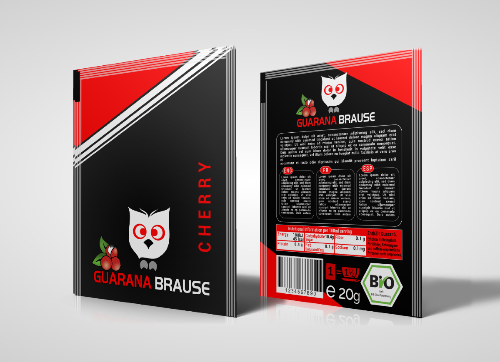

Wir sind überzeugt davon, dass die Welt eine Alternative zu Energy-Drinks und anderen Wachmachern benötigt. Deshalb haben wir Guaraná Brause erfunden - ein Schleckbrausepulver mit dem pflanzlichen Koffein der Guaraná-Liane. Unser Produkt ist zur Zeit in der Entwicklung - das obige Bild zeigt den aktuellen Stand unseres Verpackungsdesigns. Konstruktive Kritik und anderes Feedback sind jederzeit willkommen. Du kannst uns auch auf Indiegogo unterstützen und am Enwicklungsprozess teilhaben, indem Du mit entscheidest mit welcher Geschmacksrichtung wir auf den Markt gehen.
Das in Guaraná enthaltene Koffein ist an Gerbstoffe gebunden und wird über einen längeren Zeitraum im Körper freigesetzt. Unserer Erfahrung nach - und wir haben wirklich viele koffeinhaltige Pflanzen und Pulver getestet - ist Guaraná die angenehmste Substanz. Guaraná hat einen wachmachenden Effekt, der etwa 3-5 Stunden anhält und nicht zu einem abrupten Spike-Crash Effekt führt. Weiter wird die Konzentrationsfähigkeit spürbar gesteigert. Die Wirkung von Guaraná ist wesentlich angenehmer als beispielsweise von Koffeinpulver oder Grüner-Tee-Extrakt.